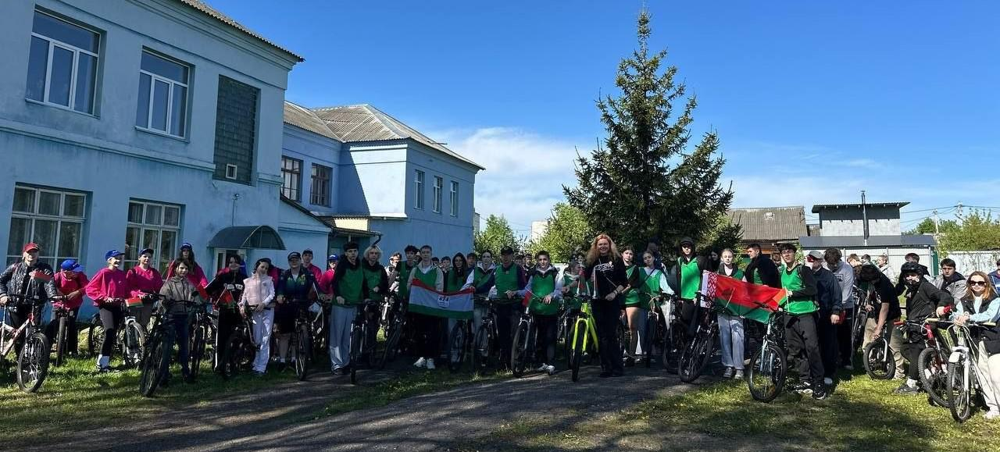
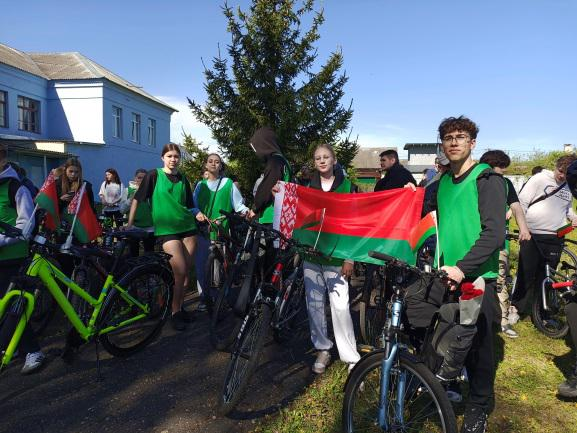
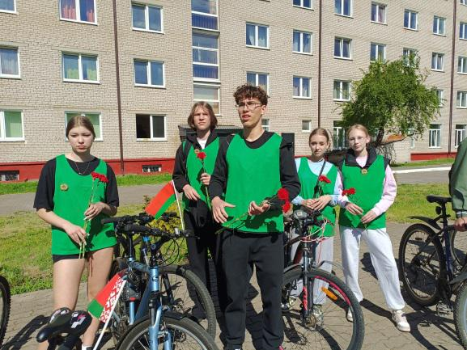
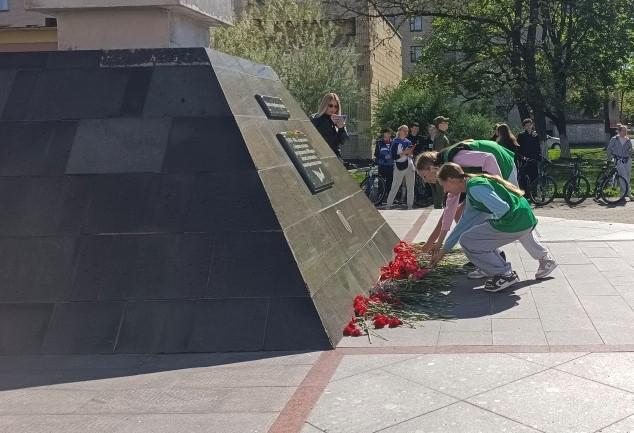

ДОРОГИ ПАМЯТИ
12 мая учащиеся 9-х классов гимназии приняли участие в молодежном велопробеге «Дороги Памяти». Мероприятие было организовано при поддержке управления по образованию и отдела идеологической работы и по делам молодежи Борисовского районного исполнительного комитета.

Ключевой задачей велопробега стало формирование у учащихся гражданско-патриотической культуры, сохранение исторической памяти, активной жизненной позиции.

Директор ГУДО «Борисовский центр экологии и туризма» Ракицкая Екатерина Игоревна открыла мероприятие, подчеркнув его патриотическую направленность и роль в укреплении национального духа. Она напомнила о важности соблюдения правил дорожного движения и вручила участникам памятные значки с эмблемой «Патриоты Борисовщины».

Путь участников пролегал от отделения туризма к мемориалу «Жертвам фашизма». Велопробег был задуман не как состязание, а как символическое путешествие по местам, хранящим память о войне. У Обелиска, в атмосфере глубокой тишины, учащиеся и педагоги почтили память погибших, возложив цветы.
